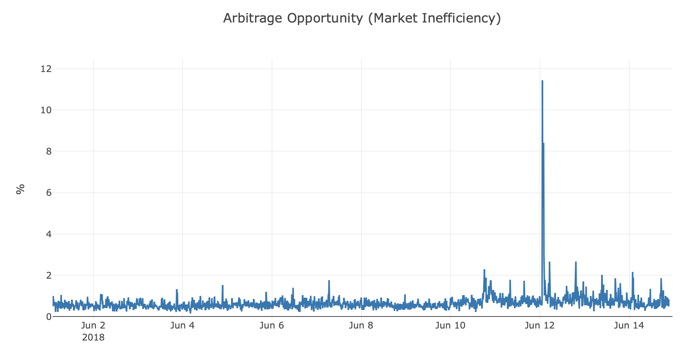

Overview
Network analysis, time series analysis, intraday analysis, and data visualization on the cryptocurrency market.
Roles
Researcher
Timeline
Sept 2018 to Dec 2018

Network analysis, time series analysis, intraday analysis, and data visualization on the cryptocurrency market.
Researcher
Sept 2018 to Dec 2018
The cryptocurrency market is an interesting new part of the financial world, with the advent ofblockchain technology showing great promise for the future of decentralized systems. However, the cryptocurrency market is not well understood, as people question the inherent value of cryptocurrencies as well as the legitimacy of cryptocurrency exchanges.
In order to get a good understanding of how the cryptocurrency markets work, we attempt to answer the following questions:
Bitcoin (BTC), Ethereum (ETH), Litecoin (LTC), Monero (XMR), Dash (DASH), and ZCash (ZEC), currently capturing a significant 60% of the total cryptocurrency market cap.
We observe only after the crash in early 2018 does the trade activity heavily centralize on Bitcoin. Although Bitcoin had been dominant, our measure of activity shows that smaller currencies had their markets stretched further to their limits, by trading indirectly around Bitcoin.
Apart from knowing the market trade volume correlations, we want to dig more into the price series correlations. We want to answer some questions: What are the correlations of cryptocurrency prices? How do the correlations changes over time? Can we find some interesting patterns by looking at their correlations? We chose 2016 as a starting point because after this year the data is ample so we can avoid some bias.
Starting from this issue, we decide to figure out the location and duration of all relatively stable and relatively chaotic periods (regime change). We will use this information to train our future models on a reliable time frame and also, to assess market efficiency during the times of instability.
First, we display the results of our KS-testing (Kolmogorov–Smirnov). We see that the regime change points capture oscillations of the market very well.
Also, we see that the periods when the momentum strategy yields the highest returns coincide with regime change regions that we have found. It reinforces the assumption that in times of uncertainty, market offers good investing opportunities
We used directed graphs to analyze value flows between cryptocurrencies. Edges are weighted by percent change times volume in ten-minute intervals.
We observe sudden flows in and out of some cryptocurrencies, spiked changes in the correlation matrix, and this behavior yields arbitrage opportunity via exchange rate cycles.
